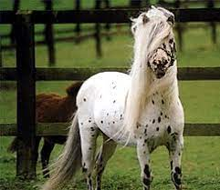
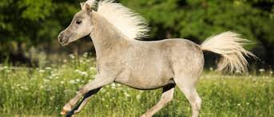

El Caballo Falabella es una raza de caballo en miniatura que proviene de Argentina. Estos caballos son extremadamente pequeños para ser caballos como tal; La altura de los falabella es inferior a 106 centímetros. El caballo se parece más a un caballo que a un poni en términos de proporciones y otro físico. Se producen muchos colores: marrón, negro y, en menor medida, abigarrado y palomino.
Los ponis argentinos tomaron su nombre de la primera familia reproductora de cerca de Buenos Aires. Los caballos Falabella tienen casi exclusivamente sangre de Shetland; El tamaño pequeño y la apariencia más elegante se lograron mediante una selección sistemática. La sangre entera inglesa también se cruzó en pequeña medida para su refinamiento. Los ponis de Falabella son demasiado pequeños para ser utilizados para el trabajo. Sin embargo, los especímenes más grandes son capaces de jalar carros ligeros con hasta dos adultos.
La raza se usa centralmente para espectáculos, lo que también explica la selección extrema por tamaño, que en parte es a expensas de la robustez y la salud de los caballos. La gran mayoría de los potros de Falabella nacen por cesárea. Debido al bajo peso corporal, los ponis tampoco se pueden mantener seguros al aire libre porque se congelan fácilmente.

El caballo Falabella se mantiene más comúnmente como un animal de compañía y se muestra en espectáculos de caballos, donde sus dimensiones en miniatura la hacen llamativo. El caballo puede moverse bien y también saltar sobre obstáculos bajos. Esto generalmente ocurre mientras el caballo está siendo guiado por la mano. No se suele montar un falabella; este caballo tampoco es adecuado para eso.
caballos en miniatura en el mundo, también están la mini raza Shetland, el caballo en miniatura estadounidense y el mini poni Appaloosa.
Un rumor evoca la creación de la raza Falabella por un cruce entre un semental pura sangre y pequeños ponis europeos, pero sus orígenes son imprecisos. La FAO indica un probable origen con la raza Shetland: de hecho, los estudios genéticos han demostrado una clara proximidad de genes entre el ejemplar Falabella y la raza Shetland, pero esto puede deberse a cruces tardíos entre estas dos razas. Además, el análisis del grupo de genes muestra que la raza está más cerca del pura sangre que del caballo ibérico, se puede agrupar en el grupo de Shetland, caballo miniatura, Appaloosa e islandés.
a cabeza de este caballo está finamente recortada y de tamaño mediano con un perfil de lucio recto o ligero. Las orejas son pequeñas y flexibles. Los potros generalmente tienen una frente fuertemente arqueada. El cuello bien ajustado no debe ser demasiado corto; la cruz no es muy pronunciada.
La espalda es corta y recta se convierte en una grupa oblicua. Los hombros son moderadamente empinados. Las piernas deben ser fuertes, pero delgadas y no demasiado cortas; en algunos casos, sin embargo, parecen algo desproporcionados para el cuerpo. La raza mini pony alcanza una altura de hasta 86,4 centímetros (34 pulgadas); Los potros a veces miden menos de 40 centímetros.
La raza Falabella fue criada exclusivamente por su tamaño pequeño, no por su color, ya que se pueden encontrar todos los colores, incluidos los rasgos de tigre y piebald. Sin embargo, los colores raros son muy populares, especialmente para los ponis que se presentan en los espectáculos. La melena y la cola son densas y tupidas.
Clasificación e historia
La raza lleva el nombre de la familia Falabella, que comenzó a criar caballos pequeños como este a mediados del siglo XIX. Un rico criador de caballos, que también crió caballos de carreras campeones, vio algunos caballos notablemente pequeños en una manada semi-salvaje cerca de Buenos Aires. Decidió criar con estos caballos con el objetivo de crear una raza de mascotas muy pequeña.
Trató de hacer que el caballo fuera cada vez más pequeño cruzando y manteniendo el tipo de sangre caliente de la raza. El conocimiento sobre esto se transmitió de padre a hijo dentro de la familia. Finalmente, lograron desarrollar una raza estable, que se puede criar con resultados predecibles. Los criadores están particularmente orgullosos de la herencia confiable de los colores especiales como manchado y palomino. Sus antepasados incluyen la raza argentina Criollo y algunas otras razas de Europa.
Los caballos Falabella llegaron por primera vez a América del Norte en la década de 1960. Doce sementales fueron comprados por una tienda de vinos. Los caballos Falabella se han visto en televisión aquí y allá en los últimos años. Anteriormente eran conocidos principalmente entre los amantes de los caballos. Hoy, la raza Falabella se cría en casi todos los continentes del mundo. Una prueba de ADN es habitual para determinar si se trata de un falabella de raza pura.
Los caballos Falabella se describen como: muy inteligente y con ganas de aprender, cariñosos y atentos. La vida útil de la raza falabella es aproximadamente entre veinticinco y treinta y cinco años. Los caballos Falabella no son ponis robustos que simplemente se puede dejar en el prado en verano y en invierno. El animal es algo sensible al frío debido a su pequeño volumen corporal.
Este caballo en miniatura es dócil y tranquilo. Puede desplegar una fuerza impresionante acorde con su tamaño. Tiene las mismas necesidades que un caballo de tamaño más tradicional, su fuerza y características físicas requieren un conocimiento ecuestre mínimo. Necesita espacio, un refugio, una casa o un puesto. Debe trabajar y moverse para mantenerse en buena forma física.